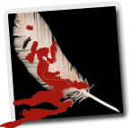

Forums galactiques > Taverne galactique : lieu de discussion informel > Une longue soirée !
Pages : 1
| Chil powo Réputation à la taverne : 406  29/10 ETU 20:14 | Score : 10 Détails Chil Powo était assis sur son canapé.
Un verre de Whisky était posé sur la petite table basse en bois qui se trouvait au milieux de son salon de réception. Les hauts parleurs ambiants, dissimulés habilement dans la pièce, diffusaient une douce musique de façon parfaitement uniforme et de sorte qu'on ne puisse savoir d'où elle venait ! Il fumait doucement l'un de ses meilleurs cigares. Il était vêtus d'un pantalon de lin, parfaitement blanc, et d'une veste bariolé à dominante rouge et orange. Ses pieds, nus, se balançaient langoureusement au rythme de la mélodie. Ses longs cheveux blancs n'étaient pas attachés. La porte s'ouvrit brusquement. Chil Powo ne bougeât pas d'un cil ! Son général suprême des armées, le ministre suprême du développement et le coordinateur suprême des sociétés entrèrent en même temps. Il se jetèrent chacun sur un canapé et se servirent un whisky. "T'aura quand même été l'un des plus beau salaud de l'histoire de cette foutue galaxie" "La direction d'un centre d’espionnage, parallèlement a des démergements incroyables pour atteindre le sénat..." "Tes techniques de développement militaire, dans une paix la plus totale, t'assurait dans la période qui à suivit l'apocalypse, une suprématie militaire sur pas mal de monde." "Tu m'as quand même déçus avec ton passage a vide lorsque l'angélus à défait le sénat." "En même temps tu t'es bien rattrapé vieux con !" "Ouais... mais alors pourquoi ?" "C'est vrai sa, personne ne peut savoir se qui se passe dans ta sale caboche, mais tout de même, tu à trouvé un patrie avec l'empire !" Chil Powo esquissa un petit sourire, et portât son verre a la bouche. "Tout est prêt ?" Les trois autres esquissèrent le même sourire, et firent de même avec leur verre ! "Tu est sûr que tu ne veut pas revenir sur ta décision ?" Chil Powo leva les yeux au ciel ... "L'empire correspond parfaitement a mes idées... mais ne m'as jamais rien apporté, et puis ils ont capacités a se bouger le cul assez rapidement !" Le générale tapas dans ses mains ; "Héhé, il est temps de prendre du bon temps !!" Chil Powo posa son cigare. Se leva lentement. "La ferme martine, ordonne l'auto destruction, Françoise, envoie l’annonce à l'assemblée galactique et toi Margueritte ordonne l’annonce a tous les foyers de nos planètes." Chacun composèrent un numéros sur leur X-com. "Ordonnez !!" "Envoyez !!" "Prévenez !!" Les quatre hommes se levèrent et rejoignirent le véhicule qui les attendait sur le toit. Chacun, oui, chacun avait un large sourire a leur visage. Le moteur démarra et l'avion les mena dans un superbe château, dans une jolie ville, d'un sympathique pays, d'un tranquille continent, d'une pacifique planète, dans un systèmes sans problèmes... Ils y arrivèrent quelques heures après leurs départ, et y fût accueillis en prince de la fulgurante soirée qui s'y déroulait. Chil Powo murmura ; "J'aurais vraiment eu une putain de vie..." Partout dans la galaxie, des centaines de milliers de vaisseaux s’autodétruisaient. Il scrutât le ciel, et murmura à ses amis ; "Personne, absolument personne, n'as jamais percé la moindre parcelle de tout se qui se passe dans ma foutue caboche... héhé, qui aurait cru que je passerait la fin de mes jours a me foutre des plûmes dans le cul en étant pris pour l'homme le plus riche d'une planète, un grand pacifiste joviale et toujours souriant !” Il tira une latte sur une jolie cigarette plein de produis récemment déclarés parfaitement l’égaux depuis peux sur la planète en question. L’homme le plus riche de la planète aurait personnellement contacté Chil Powo pour lui en faire la requête !! |
Pages : 1
Forums galactiques > Taverne galactique : lieu de discussion informel > Une longue soirée !